ENTRY 後の値動き追跡（EXIT スタディ）
検証期間 2026-02-12 〜 2026-07-22 ／
対象 near.max_position_in_range = 0.65 で発生した ENTRY_CANDIDATE
32 件（仮想ENTRY成立 32 件）／
生成日 2026-08-10
このレポートの読み方（先に必ず読むこと）
- これは収益バックテストではない。 現行
near.max_position_in_range = 0.65
で発生した ENTRY_CANDIDATE を、現在の売買ルールに沿って ENTRY から追跡した観察記録である。
勝率・平均利益率で戦略を評価しないこと。
- ポジションを閉じる機械判定に使ったのは確定ルールの初期損切り
（
range_lower × 0.995, CODEX_HANDOFF §20）だけ。
利確ルールは機械定義が未確定なので、それ以外に降りる判断を入れていない。
その結果ほぼ全件が最終的に初期STOPへ到達しているが、これを「損切り失敗率」として読んではいけない。
上昇後に遅れてSTOPへ来た件と、上昇せずにSTOPへ来た件は別物である（§12）。
順序を見ること。
- ENTRY価格は「シグナル翌営業日の始値」。 これは検証用の約定価格であって、
「今後必ず翌日始値で買う」というルールを確定するものではない。
- 警戒陰線とトレーリングの数値はすべて未確定ルールの参考値。
これらで売却判定はしていない。列名・見出しに「参考」を残してある。
- ギャップの閾値・陰線サイズの閾値・トレーリング幅は一切作っていない。
観察値を並べているだけである。
- 32件は独立ではない。 同一銘柄・近接日のイベントが含まれる。
保有中に重複したENTRYは別ポジションとして扱わず、フラグを立てて分離している。
- 母数が小さい。 分母32件、上限突破後の集計は22件。率は参考程度に留めること。
1. 主要指標
| 区分 | 指標 | 値 | 注記 |
|---|
| ENTRY | ENTRYイベント数 | 32 | 0.65 で発生した ENTRY_CANDIDATE |
| ENTRY | 翌営業日始値が取得できた件数 | 32/32 (100%) | |
| ENTRY | 翌日ギャップ率の中央値 | +0.22% | 最小 -1.39% / 最大 +3.83% |
| ENTRY | 翌日始値が元レンジ上限を超えていた件数 | 1/32 (3%) | |
| ENTRY | 翌日始値が初期STOP以下だった件数 | 0/32 (0%) | |
| ENTRY | 翌日始値でレンジ内位置が 0.65 を超えた件数 | 15/32 (47%) | 現行ガードと同じ位置基準で見た「遅くなった」件数 |
| ENTRY | 保有中の重複ENTRY | 2/32 (6%) | 同じポジションへの新規買いとしては処理していない |
| 初期展開 | 初期STOPへ先に到達 | 9/32 (28%) | |
| 初期展開 | レンジ上限へ先に到達 | 23/32 (72%) | |
| 初期展開 | 日足では先後不明 | 0/32 (0%) | AMBIGUOUS_INTRADAY_ORDER |
| 初期展開 | どちらにも到達せず | 0/32 (0%) | |
| 初期STOP | 初期STOP到達（時期を問わず） | 31/32 (97%) | 利確ルールが未確定なので、初期STOP以外にポジションを閉じる機械判定がない。この率を『損切り失敗率』として読まないこと |
| 初期STOP | ENTRYからSTOPまでの営業日数の中央値 | 6日 | 最短 0日 / 最長 48日 |
| 初期STOP | STOP前に一度でも上限を終値突破していた件数 | 21/31 (68%) | §12 の「上昇後に遅れてSTOP」に該当。単純な損切り失敗ではない |
| 初期STOP | STOP前に +5% 以上の含み益があった件数 | 12/31 (39%) | |
| 初期STOP | STOPを寄りでギャップ割れした件数 | 10/31 (32%) | 割れ幅の中央値 -1.94% ／ 日足では STOP 通りに約定できない |
| レンジ上限 | レンジ上限到達率 | 23/32 (72%) | |
| レンジ上限 | 高値だけ上限突破（終値は上限以下） | 1/32 (3%) | |
| レンジ上限 | 終値でのレンジ上限突破率 | 22/32 (69%) | |
| 上限突破後の伸び | 上限突破後 +3% 到達率 | 20/22 (91%) | 分母は終値で上限突破した件。基準は仮想ENTRY価格（翌日始値） |
| 上限突破後の伸び | 上限突破後 +5% 到達率 | 13/22 (59%) | 分母は終値で上限突破した件。基準は仮想ENTRY価格（翌日始値） |
| 上限突破後の伸び | 上限突破後 +10% 到達率 | 6/22 (27%) | 分母は終値で上限突破した件。基準は仮想ENTRY価格（翌日始値） |
| 全件の伸び | 全件で +3% 到達率 | 21/32 (66%) | 基準は仮想ENTRY価格（翌日始値） |
| 全件の伸び | 全件で +5% 到達率 | 13/32 (41%) | 基準は仮想ENTRY価格（翌日始値） |
| 全件の伸び | 全件で +10% 到達率 | 6/32 (19%) | 基準は仮想ENTRY価格（翌日始値） |
| EXIT（参考） | 警戒陰線が発生した件数 | 31/32 (97%) | 陰線の総数 175 本 |
| EXIT（参考） | 警戒陰線安値を割った件数 | 30/32 (94%) | |
| EXIT（参考） | 最初の警戒陰線の安値を割る前に高値更新した件数 | 8/31 (26%) | 「高値」は警戒陰線自身の高値で判定（定義未確定） |
| トレーリング（参考） | 参考A strict（押し安値の後に高値更新を要求）: trailが有効になった件数 | 2/32 (6%) | 初期STOPより上の水準になった場合のみ有効とみなす |
| トレーリング（参考） | 参考A strict（押し安値の後に高値更新を要求）: 初期STOPより有利な撤退になった件数 | 2/32 (6%) | 参考シミュレーション。売買ルールにはしない |
| トレーリング（参考） | 参考A strict（押し安値の後に高値更新を要求）: trail撤退時のリターン中央値 | -2.56% | 仮想ENTRY価格（翌日始値）基準 |
| トレーリング（参考） | 参考B loose（押し安値の確定時点で引き上げ）: trailが有効になった件数 | 10/32 (31%) | 初期STOPより上の水準になった場合のみ有効とみなす |
| トレーリング（参考） | 参考B loose（押し安値の確定時点で引き上げ）: 初期STOPより有利な撤退になった件数 | 9/32 (28%) | 参考シミュレーション。売買ルールにはしない |
| トレーリング（参考） | 参考B loose（押し安値の確定時点で引き上げ）: trail撤退時のリターン中央値 | -2.75% | 仮想ENTRY価格（翌日始値）基準 |
| トレーリング（参考） | 参考B loose（押し安値の確定時点で引き上げ）: trailと初期STOPが同日で順序不明 | 3/10 (30%) | |
| 参考リターン | 初期STOPのみで降りた場合のリターン中央値 | -4.55% | 利確ルールが無いため、ほぼ全件がSTOPまで持ち切った結果。戦略の成績ではない |
| 分類 | TYPE1 上限到達前に初期STOP | 9/32 (28%) | |
| 分類 | TYPE2 上限到達も突破できず | 1/32 (3%) | |
| 分類 | TYPE2b 上限突破したが+3%未満 | 2/32 (6%) | |
| 分類 | TYPE3 上限突破 +3〜5% | 7/32 (22%) | |
| 分類 | TYPE4 上限突破 +5%以上 | 13/32 (41%) | |
| フラグ（TYPE と排他ではない） | TYPE5 翌日始値でレンジ内位置が現行ガード0.65を超えた | 15/32 (47%) | |
| フラグ（TYPE と排他ではない） | STOP前に+5%以上の含み益があった | 12/32 (38%) | |
| フラグ（TYPE と排他ではない） | 初期STOPを寄りで割って約定（スリッページ） | 10/32 (31%) | |
| フラグ（TYPE と排他ではない） | 保有中の重複ENTRY | 2/32 (6%) | |
| フラグ（TYPE と排他ではない） | 翌日始値が元レンジ上限超 | 1/32 (3%) | |
| データ制約 | データ終端時点で保有継続中 | 1/32 (3%) | 追跡が打ち切られており、その後の展開は不明 |
2. §16 への回答
1. 32件のうち、翌日始値で仮想ENTRYできた件数
32/32（100%）。全件で翌営業日の足が存在し、始値を取得できた。初期STOP以下で寄り付いた件は 0 件。
2. ENTRY後すぐ初期STOPになった件数
上限に触れる前にSTOPへ来たのは 9/32（28%）（TYPE1）。うち D+0〜D+1 でのSTOPが 5 件。
3. 初期STOPより先にレンジ上限へ到達した割合
23/32（72%）。STOPが先だったのは 9/32（28%）。日足で先後を決められなかったのは 0 件。
4. レンジ上限を終値で突破した割合
22/32（69%）。高値だけ上限を超えて終値は上限以下だったのは 1 件、上限に一度も触れなかったのは 9 件。
5. 上限突破後に +3% / +5% / +10% まで伸びた割合
+3%: 20/22（91%） / +5%: 13/22（59%） / +10%: 6/22（27%）（分母は終値で上限突破した件。基準は仮想ENTRY価格）
6. 警戒陰線ルールを適用するとどんなEXIT候補が出るか
保有中に陰線が出たのは 31/32（97%）、その安値を割ったのは 30/32（94%）。つまりほぼ全件で利確候補が発生する。最初の警戒陰線が出るまでの中央値は D+0。陰線を1本ずつ警戒足として扱うと候補が出すぎて選別にならない点が、この検証で最もはっきりした未確定部分。
7. トレーリングで初期STOPより有利な撤退ラインへ移行できそうな件数
§30 を文字通り読む参考A（押し安値の後に高値更新を要求）では 2/32（6%） しか成立しない。押し安値の確定時点で引き上げてよいと読む参考B では 10/32（31%）。読み方の違いだけで結果が大きく変わるため、ここは定義を決めないと数値が意味を持たない。
8. 翌日ギャップアップでENTRY品質が悪化するケース
翌日始値で元レンジ上限を上抜けていたのは 1 件。現行ガード 0.65 をレンジ内位置が超えたのは 15/32（47%）。ただしギャップ率の中央値自体は小さく、位置ガードのすぐ下でシグナルが出た件がわずかなギャップで超えているだけのものも含まれる（次表で個別に確認できる）。
9. ENTRYロジック自体に明らかな問題が見つかったか
上限へ到達したのが 23/32（72%）、終値突破が 22/32（69%） なので、「下限反発を拾って上昇波の入口を捉える」という意図は機能している。一方で 31/32（97%） が最終的に初期STOPへ到達しており、問題はENTRY側ではなく、上昇したあと利益を確定する機械ルールが無いことに集中している。STOPへ来た件のうち 21 件はSTOP前に上限を終値突破していた。
10. 次に機械定義を詰めるべき項目
レポート末尾の「未確定のまま残った項目」を参照。
3. イベント一覧
「+3/+5/+10」は仮想ENTRY価格（翌日始値）からの到達。●=到達 ○=未到達。
「trail A/B」は参考シミュレーションで trail が有効になったか。
4. イベントの順序
§12 のとおり、単一の勝率指標で成否を決めない。
同じ「初期STOP到達」でも、上限を突破して +8% まで伸びた後に戻ってきたのか、
一度も上昇せずに落ちたのかは別物である。以下は各イベントで何が何の順で起きたかを並べたもの。
高値更新と押し安値確定は本数が多いため畳んである（全量は timeline.csv）。
5. 翌日ギャップと ENTRY 位置の再評価
§4 のとおり、「ギャップ +X% 以上なら買わない」のような新しい閾値は作っていない。どの程度ギャップが出ているかを観察するだけ。判定に使っているのは、既に運用中の確定ガード near.max_position_in_range = 0.65 との対比のみ。
6. 警戒陰線（参考・売却判定はしていない）
§9 の「大陰線＋出来高急増＋安値引け＋支持帯割れなら陰線1本でも早期利確」は、機械的な数値定義が未確定である。したがってここでは一切売却判定をしていない。以下は MANUAL_EXIT_REVIEW（人間が後からチャート確認する）用に、各参考指標の極値を並べたもの。合成スコアも閾値も作っていない。保有中の陰線は全 175 本で、全件が MANUAL_EXIT_REVIEW 対象。
当日騰落率が大きい順（下落）
実体幅 / ATR14 が大きい順
出来高倍率（25日平均比）が大きい順
終値が当日安値に近い順（安値引け）
7. トレーリング候補（参考シミュレーション）
本番の売買ルールには反映していない。
§30 の「新しい押し安値」は機械定義が未確定なので、既存の swing 検出
（fractal, pivot_window=2）で確定した押し安値を暫定的に使い、
§30 の読み方を 2 通りに分けて併記している。
参考A strict: 押し安値の形成後に「前の高値を上抜く」ことを要求する（文字通りの読み）。
参考B loose: 押し安値が確定した時点で trail を引き上げてよいとする読み。
どちらが正しいかをこの検証では決めない。
8. 代表チャート
ENTRY直後に初期STOP
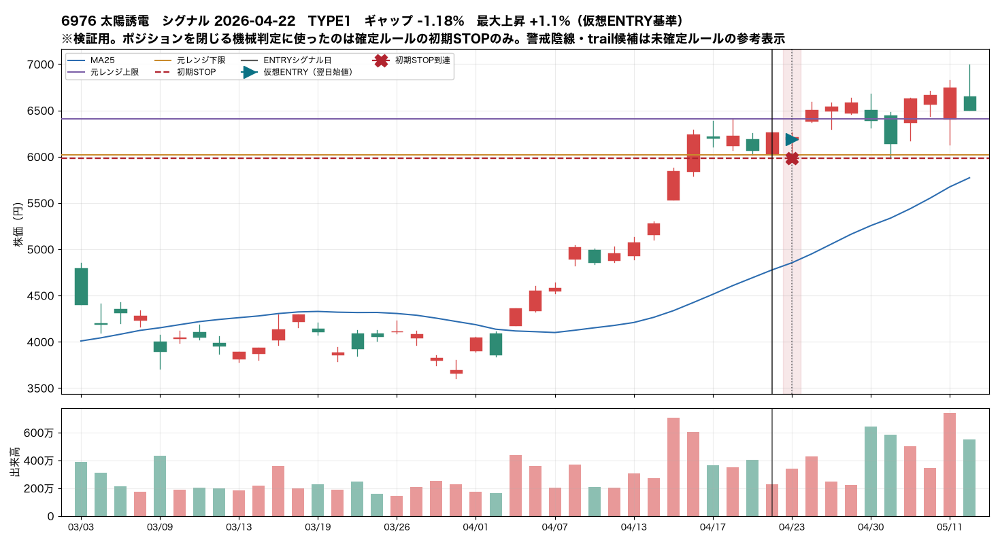
6976 太陽誘電 シグナル 2026-04-22 / TYPE1
D+0 ENTRY → D+0 初期STOP到達
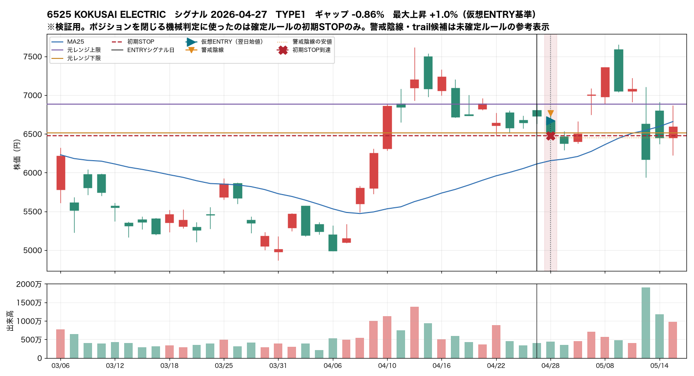
6525 KOKUSAI ELECTRIC シグナル 2026-04-27 / TYPE1
D+0 ENTRY → D+0 初期STOP到達
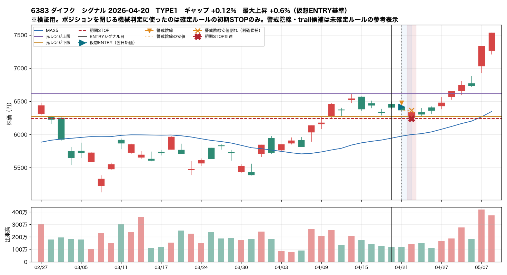
6383 ダイフク シグナル 2026-04-20 / TYPE1
D+0 ENTRY → D+1 初期STOP到達 → D+1 警戒陰線安値割れ→利確候補
上限到達後に失速
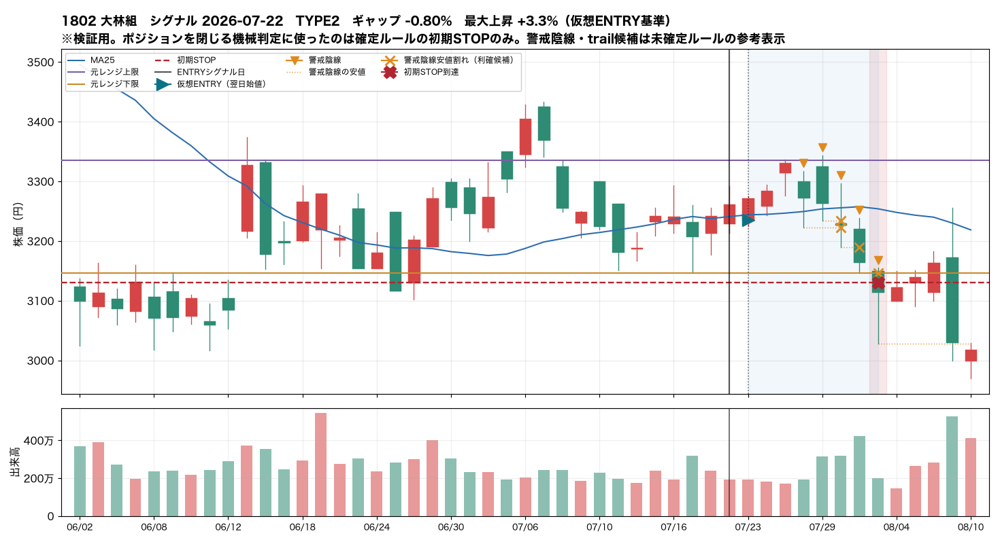
1802 大林組 シグナル 2026-07-22 / TYPE2
D+0 ENTRY → D+2 上限到達 → D+2 +3% → D+5 警戒陰線安値割れ→利確候補 → D+5 警戒陰線安値割れ→利確候補 → D+6 警戒陰線安値割れ→利確候補 → D+7 初期STOP到達 → D+7 警戒陰線安値割れ→利確候補
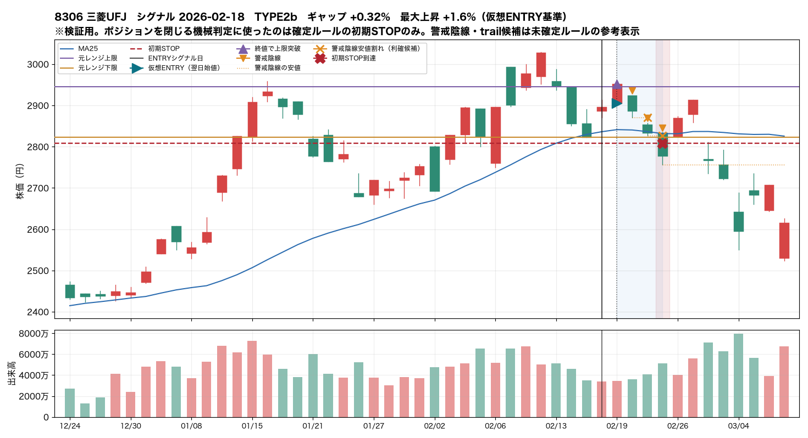
8306 三菱UFJ シグナル 2026-02-18 / TYPE2b
D+0 ENTRY → D+0 上限到達 → D+0 終値で上限突破 → D+2 警戒陰線安値割れ→利確候補 → D+3 初期STOP到達 → D+3 警戒陰線安値割れ→利確候補
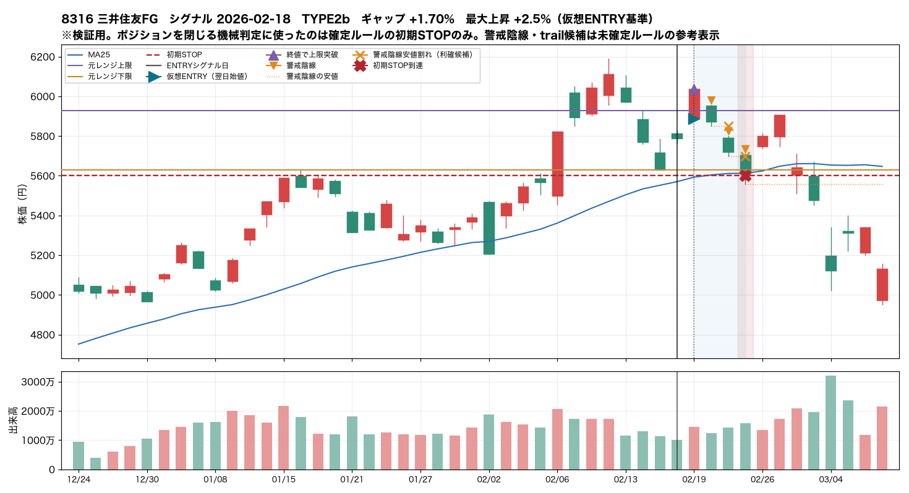
8316 三井住友FG シグナル 2026-02-18 / TYPE2b
D+0 ENTRY → D+0 上限到達 → D+0 終値で上限突破 → D+2 警戒陰線安値割れ→利確候補 → D+3 初期STOP到達 → D+3 警戒陰線安値割れ→利確候補
上限突破後に大きく上昇
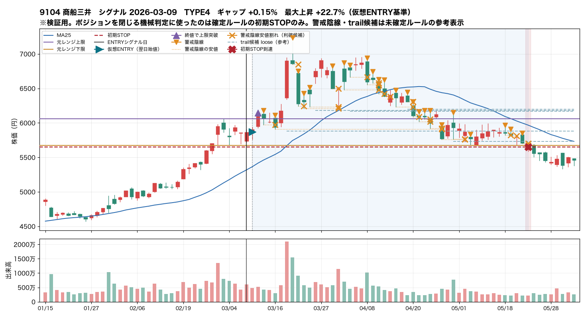
9104 商船三井 シグナル 2026-03-09 / TYPE4
D+0 ENTRY → D+1 上限到達 → D+1 +3% → D+1 +5% → D+1 終値で上限突破 → D+4 警戒陰線安値割れ→利確候補 → D+6 +10% → D+6 trail候補 → D+8 警戒陰線安値割れ→利確候補 → D+9 警戒陰線安値割れ→利確候補 → D+15 警戒陰線安値割れ→利確候補 → D+15 警戒陰線安値割れ→利確候補 → D+15 警戒陰線安値割れ→利確候補 → D+20 警戒陰線安値割れ→利確候補

8306 三菱UFJ シグナル 2026-06-12 / TYPE4
D+0 ENTRY → D+0 上限到達 → D+3 +3% → D+3 +5% → D+3 終値で上限突破 → D+5 警戒陰線安値割れ→利確候補 → D+7 警戒陰線安値割れ→利確候補 → D+9 trail候補 → D+10 警戒陰線安値割れ→利確候補 → D+10 警戒陰線安値割れ→利確候補 → D+18 警戒陰線安値割れ→利確候補 → D+20 +10% → D+24 警戒陰線安値割れ→利確候補 → D+31 警戒陰線安値割れ→利確候補

6361 荏原 シグナル 2026-04-20 / TYPE4
D+0 ENTRY → D+1 上限到達 → D+1 +3% → D+1 +5% → D+1 終値で上限突破 → D+4 警戒陰線安値割れ→利確候補 → D+6 警戒陰線安値割れ→利確候補 → D+7 警戒陰線安値割れ→利確候補 → D+8 +10% → D+9 trail候補 → D+12 警戒陰線安値割れ→利確候補 → D+14 警戒陰線安値割れ→利確候補 → D+15 警戒陰線安値割れ→利確候補 → D+16 警戒陰線安値割れ→利確候補
警戒陰線から利確候補
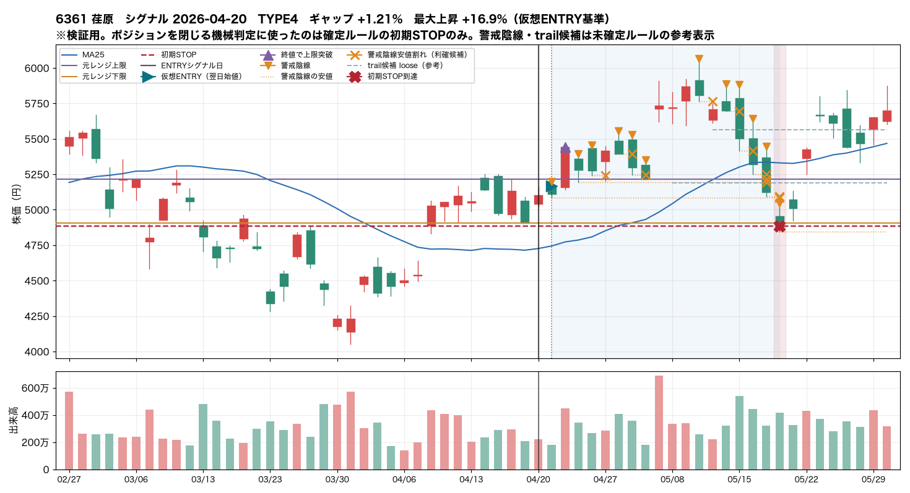
6361 荏原 シグナル 2026-04-20 / TYPE4
D+0 ENTRY → D+1 上限到達 → D+1 +3% → D+1 +5% → D+1 終値で上限突破 → D+4 警戒陰線安値割れ→利確候補 → D+6 警戒陰線安値割れ→利確候補 → D+7 警戒陰線安値割れ→利確候補 → D+8 +10% → D+9 trail候補 → D+12 警戒陰線安値割れ→利確候補 → D+14 警戒陰線安値割れ→利確候補 → D+15 警戒陰線安値割れ→利確候補 → D+16 警戒陰線安値割れ→利確候補
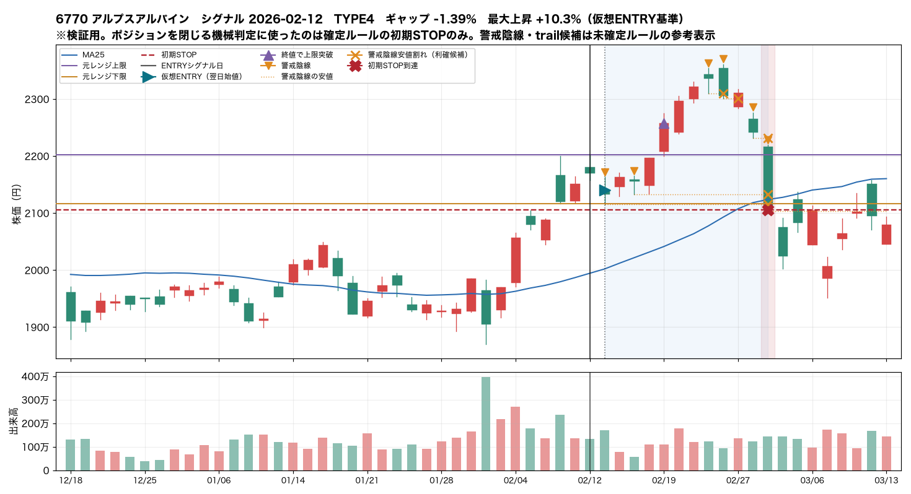
6770 アルプスアルパイン シグナル 2026-02-12 / TYPE4
D+0 ENTRY → D+4 上限到達 → D+4 +3% → D+4 +5% → D+4 終値で上限突破 → D+8 +10% → D+8 警戒陰線安値割れ→利確候補 → D+9 警戒陰線安値割れ→利確候補 → D+11 初期STOP到達 → D+11 警戒陰線安値割れ→利確候補 → D+11 警戒陰線安値割れ→利確候補 → D+11 警戒陰線安値割れ→利確候補
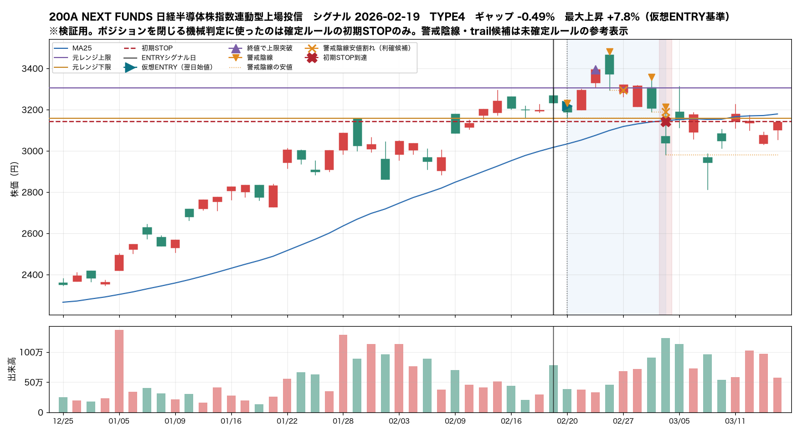
200A NEXT FUNDS 日経半導体株指数連動型上場投信 シグナル 2026-02-19 / TYPE4
D+0 ENTRY → D+2 上限到達 → D+2 +3% → D+2 +5% → D+2 終値で上限突破 → D+4 警戒陰線安値割れ→利確候補 → D+7 初期STOP到達 → D+7 警戒陰線安値割れ→利確候補 → D+7 警戒陰線安値割れ→利確候補
トレーリングが有効そうな例

6361 荏原 シグナル 2026-04-20 / TYPE4
D+0 ENTRY → D+1 上限到達 → D+1 +3% → D+1 +5% → D+1 終値で上限突破 → D+4 警戒陰線安値割れ→利確候補 → D+6 警戒陰線安値割れ→利確候補 → D+7 警戒陰線安値割れ→利確候補 → D+8 +10% → D+9 trail候補 → D+12 警戒陰線安値割れ→利確候補 → D+14 警戒陰線安値割れ→利確候補 → D+15 警戒陰線安値割れ→利確候補 → D+16 警戒陰線安値割れ→利確候補

9104 商船三井 シグナル 2026-03-09 / TYPE4
D+0 ENTRY → D+1 上限到達 → D+1 +3% → D+1 +5% → D+1 終値で上限突破 → D+4 警戒陰線安値割れ→利確候補 → D+6 +10% → D+6 trail候補 → D+8 警戒陰線安値割れ→利確候補 → D+9 警戒陰線安値割れ→利確候補 → D+15 警戒陰線安値割れ→利確候補 → D+15 警戒陰線安値割れ→利確候補 → D+15 警戒陰線安値割れ→利確候補 → D+20 警戒陰線安値割れ→利確候補
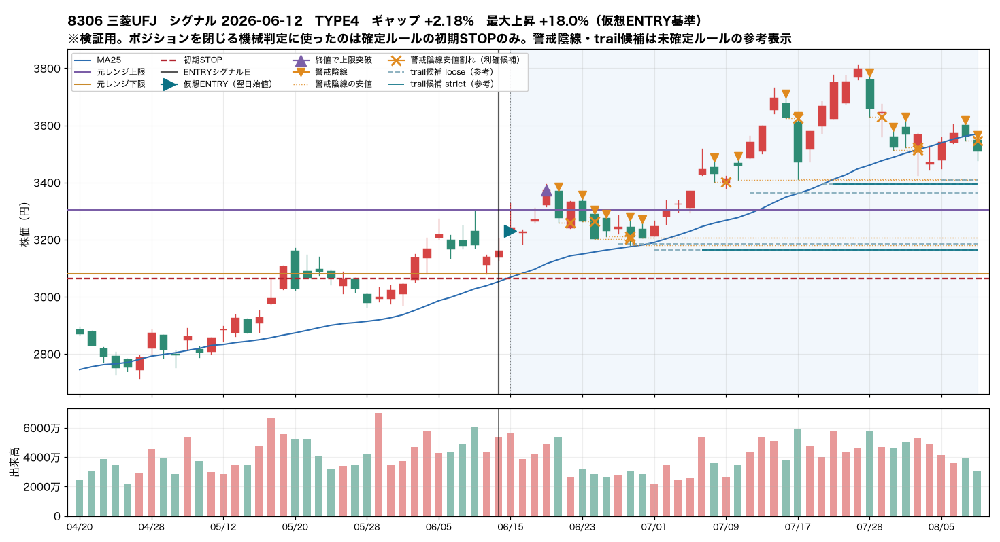
8306 三菱UFJ シグナル 2026-06-12 / TYPE4
D+0 ENTRY → D+0 上限到達 → D+3 +3% → D+3 +5% → D+3 終値で上限突破 → D+5 警戒陰線安値割れ→利確候補 → D+7 警戒陰線安値割れ→利確候補 → D+9 trail候補 → D+10 警戒陰線安値割れ→利確候補 → D+10 警戒陰線安値割れ→利確候補 → D+18 警戒陰線安値割れ→利確候補 → D+20 +10% → D+24 警戒陰線安値割れ→利確候補 → D+31 警戒陰線安値割れ→利確候補
翌日ギャップアップでENTRYが遅くなった例

9104 商船三井 シグナル 2026-03-25 / TYPE3
D+0 ENTRY → D+0 上限到達 → D+0 終値で上限突破 → D+1 +3% → D+4 警戒陰線安値割れ→利確候補 → D+7 trail候補 → D+9 警戒陰線安値割れ→利確候補 → D+11 警戒陰線安値割れ→利確候補 → D+11 警戒陰線安値割れ→利確候補 → D+11 警戒陰線安値割れ→利確候補 → D+12 警戒陰線安値割れ→利確候補 → D+13 警戒陰線安値割れ→利確候補 → D+17 初期STOP到達 → D+17 警戒陰線安値割れ→利確候補
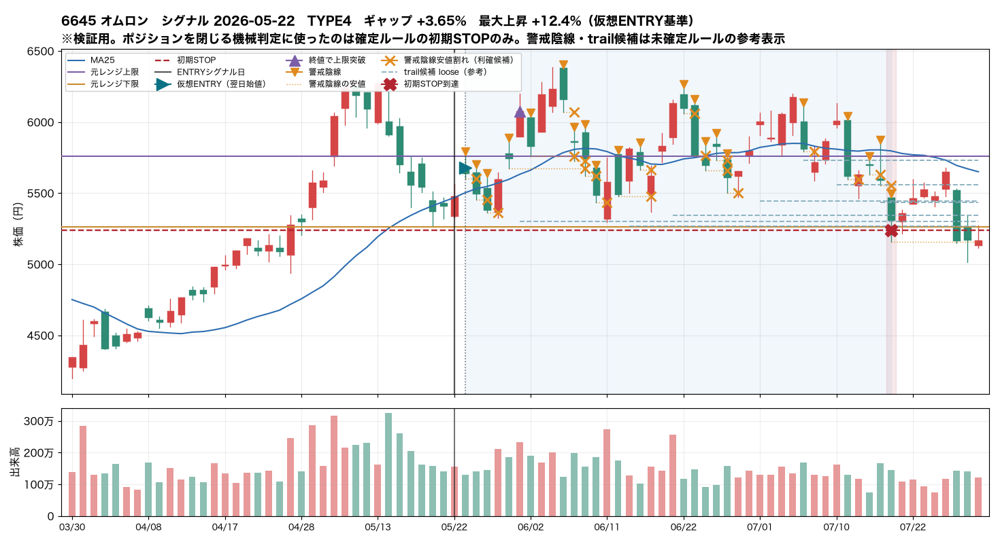
6645 オムロン シグナル 2026-05-22 / TYPE4
D+0 ENTRY → D+0 上限到達 → D+1 警戒陰線安値割れ→利確候補 → D+2 警戒陰線安値割れ→利確候補 → D+3 警戒陰線安値割れ→利確候補 → D+4 +3% → D+5 +5% → D+5 終値で上限突破 → D+5 trail候補 → D+7 +10% → D+10 警戒陰線安値割れ→利確候補 → D+10 警戒陰線安値割れ→利確候補 → D+11 警戒陰線安値割れ→利確候補 → D+11 警戒陰線安値割れ→利確候補

8308 りそなHD シグナル 2026-06-12 / TYPE3
D+0 ENTRY → D+0 翌寄が上限超 → D+0 上限到達 → D+0 +3% → D+0 終値で上限突破 → D+1 警戒陰線安値割れ→利確候補 → D+3 trail候補 → D+5 警戒陰線安値割れ→利確候補 → D+5 警戒陰線安値割れ→利確候補 → D+7 警戒陰線安値割れ→利確候補 → D+8 警戒陰線安値割れ→利確候補 → D+8 警戒陰線安値割れ→利確候補 → D+9 初期STOP到達 → D+9 警戒陰線安値割れ→利確候補
日足だけでは先後関係が判断できない例
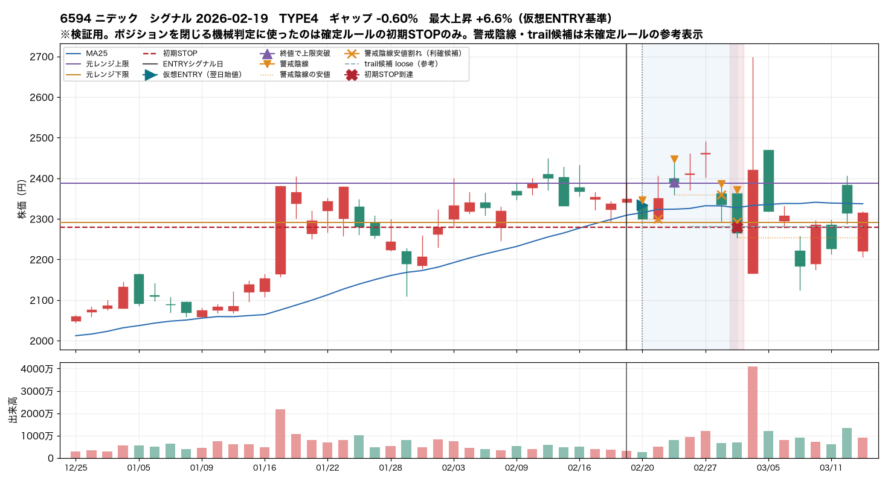
6594 ニデック シグナル 2026-02-19 / TYPE4
D+0 ENTRY → D+1 上限到達 → D+1 警戒陰線安値割れ→利確候補 → D+2 +3% → D+2 終値で上限突破 → D+3 +5% → D+3 trail候補 → D+5 警戒陰線安値割れ→利確候補 → D+6 初期STOP到達 → D+6 警戒陰線安値割れ→利確候補
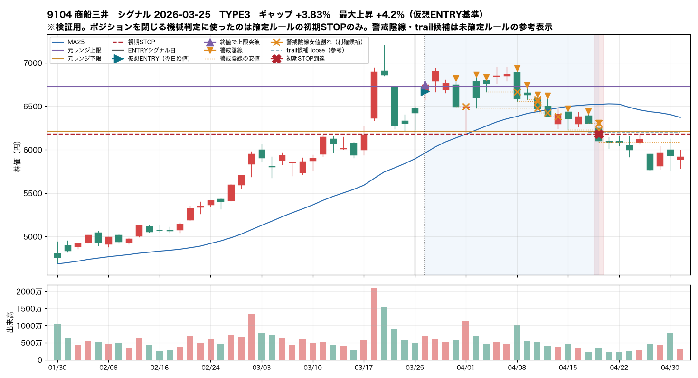
9104 商船三井 シグナル 2026-03-25 / TYPE3
D+0 ENTRY → D+0 上限到達 → D+0 終値で上限突破 → D+1 +3% → D+4 警戒陰線安値割れ→利確候補 → D+7 trail候補 → D+9 警戒陰線安値割れ→利確候補 → D+11 警戒陰線安値割れ→利確候補 → D+11 警戒陰線安値割れ→利確候補 → D+11 警戒陰線安値割れ→利確候補 → D+12 警戒陰線安値割れ→利確候補 → D+13 警戒陰線安値割れ→利確候補 → D+17 初期STOP到達 → D+17 警戒陰線安値割れ→利確候補
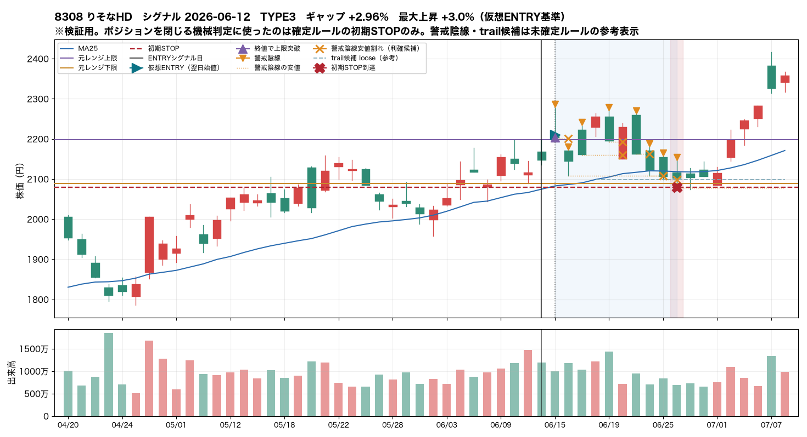
8308 りそなHD シグナル 2026-06-12 / TYPE3
D+0 ENTRY → D+0 翌寄が上限超 → D+0 上限到達 → D+0 +3% → D+0 終値で上限突破 → D+1 警戒陰線安値割れ→利確候補 → D+3 trail候補 → D+5 警戒陰線安値割れ→利確候補 → D+5 警戒陰線安値割れ→利確候補 → D+7 警戒陰線安値割れ→利確候補 → D+8 警戒陰線安値割れ→利確候補 → D+8 警戒陰線安値割れ→利確候補 → D+9 初期STOP到達 → D+9 警戒陰線安値割れ→利確候補
9. 未確定のまま残った項目
以下はこの検証では決めなかった。数値を置けば動くが、
過去6ヶ月32件への当てはめで決めると過剰最適化になるため、
観察結果を材料として提示するに留める。
- 「最初の陰線＝警戒足」の絞り込み。 保有中の陰線をそのまま警戒足にすると
今回 175 本・ほぼ全件で利確候補が出た。どの陰線を警戒足とみなすかを決めないと、
§30 の HOLD／利確候補の分岐が機能しない。決めるべきは「高値更新の直後の陰線に限るのか」
「一定以上の実体を持つものに限るのか」など。今回は数値を決めていない。
- 「陰線安値を割らず高値更新」の“高値”の定義。 警戒陰線自身の高値なのか、
保有中の最高値なのかで結果が変わる（今回は両方を記録した）。
- 「新しい押し安値」の定義。 既存の fractal（pivot_window=2）は
右側2本ぶん遅れて確定するため、トレーリングの反応が構造的に遅い。
さらに §30 を文字通り読むか緩く読むかで成立件数が 2 件と 10 件に分かれた。
- 初期STOPの約定前提。 STOP到達 31 件のうち 10 件は寄り付きで STOP を割っており、
日足検証の「STOP価格で降りられる」という前提は成立しない。
スリッページをどう見込むか。
- 利確ルールが無いこと自体。 現状ポジションを閉じる機械判定は初期STOPだけなので、
上昇分を必ず往復させる構造になっている。§9 の大陰線例外を含め、
ここが機械定義の最優先項目である。
10. 出力ファイル
| ファイル | 内容 |
|---|
events.csv | 32件の追跡結果（1行1イベント） |
summary.csv | 集計値 |
timeline.csv | ENTRY後に起きたことの全イベント（順序の生データ） |
warning_candles.csv | 保有中の陰線全件と MANUAL_EXIT_REVIEW 用の参考指標 |
trail_candidates.csv | トレーリング候補（参考A/B） |
representative_charts/ | 代表チャート |
前回の閾値スイープ検証（research/report.html,
research/events*.csv, research/charts/）は上書きしていない。